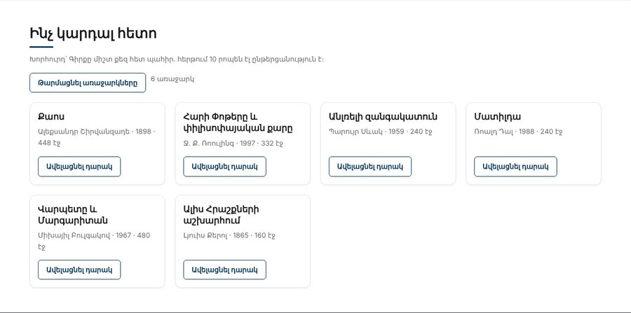

Տնային աշխատանք · JS Դաս 19 · մինի-նախագիծ
Նոր բաժին՝ «Ինչ կարդալ հետո»։ Առաջարկները գալիս են «սերվերից», որը պատասխանում է ուշացումով և երբեմն սխալվում է։ Երեք վիճակ՝ բեռնում, տվյալներ, սխալ, և երկու զուգահեռ հարցում։
Դաս 01–19․ Promise, then/catch/finally, Promise.all, Promise.allSettled, Promise.reject։ fetch և async/await՝ Դաս 20-ում։

Աշխատիր քո կայքում (կամ նախորդ դասի օրինակում)։ CSS-ը տրված է, որ կենտրոնանաս JS-ի վրա․ HTML/CSS-ը արդեն գիտես։
starter/css/books-19.css — CSS-ը, որ ավելանում է այս դասինstarter/js/fake-api.js — առաջարկների և խորհուրդների տվյալներըstarter/pages/books.html — «Գրքեր» էջի markup-ը (JS չկա, միայն <script>-ները)fake-api.js՝ delay(ms), getRecommended() (20% դեպքերում՝ սխալ), getTip()starter/-իցexport const delay = ms => new Promise(resolve => setTimeout(resolve, ms));
export function getRecommended() {
return delay(DELAY).then(() => {
if (Math.random() < FAIL_RATE) {
return Promise.reject(new Error("Սերվերը չպատասխանեց"));
}
return RECOMMENDED;
});
}.skeleton), «Բեռնվում է…», կոճակը՝ disabledPromise.allSettled([getRecommended(), getTip()])Promise.all․ եթե առաջարկները ձախողվեն, խորհուրդը չպիտի կորչիfinally-ում․ և՛ հաջողության, և՛ սխալի դեպքումread: 0-ով, քարտը դառնում է «Դարակում է»| Սխալ | Ինչպես ուղղել |
|---|---|
Էջում [object Promise] | Promise-ը արժեք չէ․ արդյունքը՝ .then-ում |
| Սխալը չի բռնվում | .then շղթայի վերջում չկա .catch (կամ allSettled-ի status-ը չես ստուգում) |
| Կոճակը մնում է անջատված | Միացրու finally-ում, ոչ միայն հաջողության դեպքում |
Մեկ .then-ում մոռացված return | Հաջորդ .then-ը ստանում է undefined (Դաս 19 տնային) |
Սրանք Դաս 19-ի տնային աշխատանքի կետերն են։ «մինի-նախագծում» նշվածները արդեն կատարել ես վերևի քայլերում, մնացածը կատարիր առանձին ֆայլերում։
console.log("A"), setTimeout(...,0) «B»-ով, Promise.resolve().then() «C»-ով, console.log("D")։ Բացատրիր արդյունքը մեկնաբանության մեջ։delay(ms) ֆունկցիան։ Օգտագործիր այն 3 վայրկյանանոց հետհաշվարկի համար՝ 3, 2, 1, «Մեկնարկ»։getRandomNumber(), որը 1 վայրկյան հետո resolve է անում պատահական թիվ։ 50% դեպքերում՝ reject։ Մշակիր երկու դեպքն էլ։ մինի-նախագծումgetUser(id), որը վերադարձնում է Promise։ Անվավեր id-ի դեպքում՝ reject(new Error(...))։getOrders(userId) և կապիր շղթայով՝ նախ օգտագործող, հետո նրա պատվերները։return-ը մեկ .then-ում։ Գրիր՝ ինչ ստացվեց և ինչու։Promise.all՝ երեք «հարցում» զուգահեռ։ Չափիր ժամանակը console.time-ով և համեմատիր հերթականի հետ։Promise.allSettled-ով, որտեղ մեկը ձախողվում է։ Ցուցադրիր՝ որոնք հաջողվեցին և որը՝ ոչ։ մինի-նախագծում.finally()։ մինի-նախագծումԵրբ բաժին 03-ի բոլոր կետերը նշված են, բացիր օրինակը և դրա կոդը example/js/-ում։ Դաս 18-ից օրինակը բացիր Live Server-ով։ Գտիր մեկ բան, որ դու արել ես այլ կերպ, և մտածիր՝ որն է ավելի հասկանալի և ինչու։ Քո լուծումը կարող է տարբերվել և լինել ճիշտ։